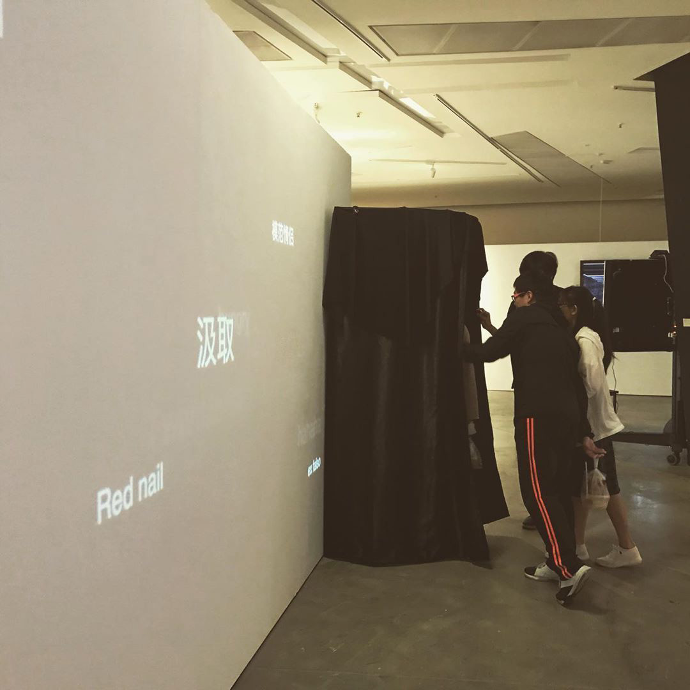
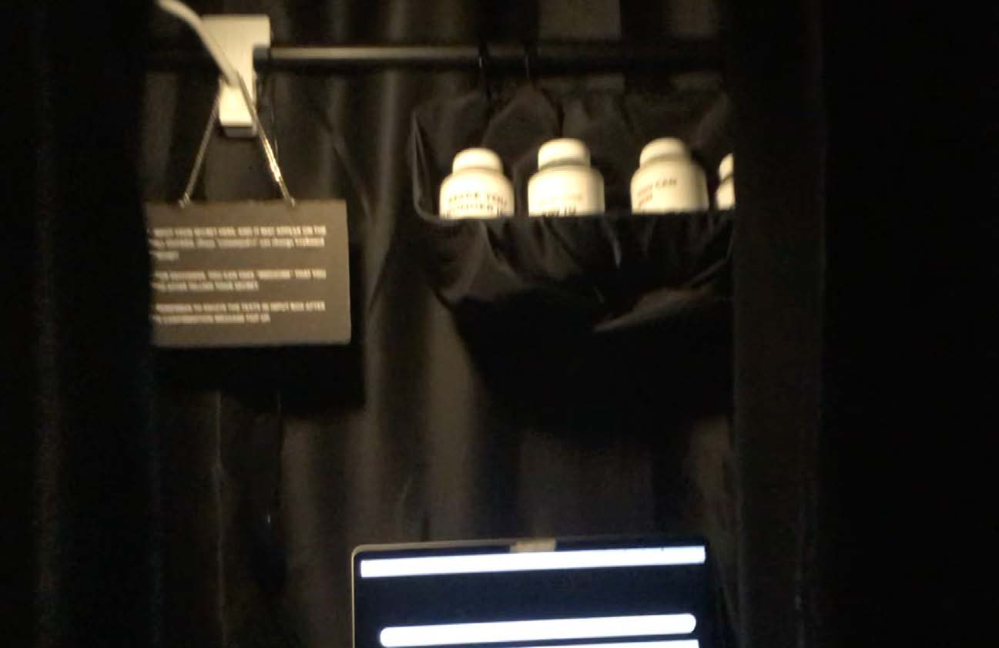
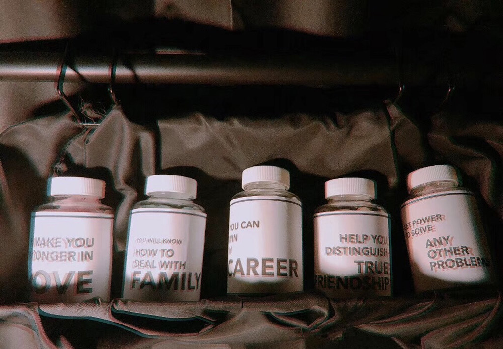
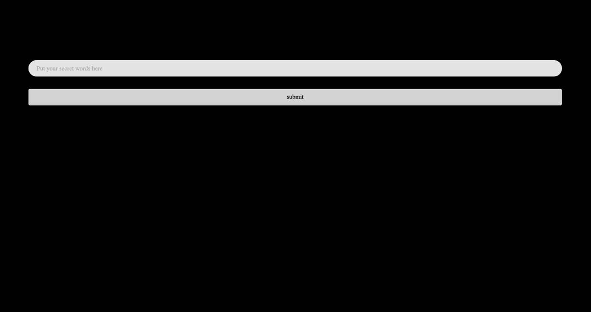

Secret Recycling
Secret Recycling
Interactive Art Installation
2019/05-06
Microcosm || Magnetism: SCM MFA Graduation Show 2019
CMC Art Gallery, City University of Hong Kong
Many people have their own secrets, some are painful histories, some are trivial matters that just cannot be let go of. For whatever reason, these things make people feel that it is difficult to confess their secrets. Perhaps everyone needs a place to tell and release their secrets to – a place like a tree hole in a fairytale – a tomb to bury their secrets. While completing this funeral for their secrets, people can say goodbye to the past at the same time.




